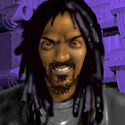
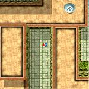
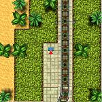
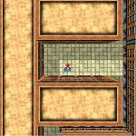

Vice City 2 (Rasta Blasta)

Brother Marcus
| ボス | Rastas(ラスタ団) |
|---|---|
| 目標スコア | 500万 |
| ミッション | 16 |
オープニングミッション
Mission 1
- 任務
- Rastas を追いつめる
- フロー
- Start → NW Richman Heights → 爆弾ショップ → NW Richman Heights
Rastas の車が NW Richman Heights に駐車されているので、そこに向かいます。車に乗り込んだら、最寄りの爆弾ショップ(SE Richman Heights がいいでしょう)で爆弾を仕掛け、元の場所に戻してください。
車を降りて待っていると、男が乗り込んで爆死します。ここでミッション完了ですが、まだ続きがあります。
ボスの指示を受けるため C Greek Heights と S Miramire の電話に出たら、最終的に C Vice Beach に向かうことになります。
電話に出ると Rastas の連中が現れ、「Deever と仕事を続けるなら左、裏切って Rastas に付くなら右へ行け」といわれ、決断を迫られます。
右へ行った場合
Rastas の一員として受け入れられ、以降、彼らから仕事を受けることになります。
左へ行った場合
Rastas との会話は一旦終了します。
無線で連絡が入り、キューバからの品を積んだ車を押えるように指示されます。車は E Banana Grove 付近を走行しているので、追いかけて破壊してください。
しかし、これは Rastas が仕掛けた罠で、車には Deever の女が乗っていたことがわかります。
これでは Deever に面倒を見てもらえるはずもなく、結局 Rastas の仲間になることになります。
| スコア | チェックポイント |
|---|---|
| +6,000 | NW Richman Heights の Itali GTB に乗り込む |
| +1,000 | Itali GTB に爆弾を仕込む |
| +20,000 | 自動車爆弾で Rastas のメンバーを殺す (Mission Complete) |
| +1,000 | C Greek Heights の電話に出る |
| +1,000 | S Miramire の電話に出る |
| +1,000 | C Vice Beach の電話に出る |
| +25,000 | 右へ行く |
| +10,000 | 左へ行き、Limousine を破壊する |
結局 Rastas に加入することになりますので、右へ行きましょう。
公衆電話ミッション (SW Vice Shores)
この4つの公衆電話はそれぞれミッション2〜5につながっています。攻略はどのミッションからでも結構です。
| SW Vice Shores |
 |
Mission 2
- 任務
- 政府に戦いを挑む
- フロー
-
 → S Banana Grove
→ S Banana Grove
S Banana Grove に向かってください。前のチャプターでさんざん通った見覚えのある場所です。
敷地の前に行くと見張りが発砲してきますが、とりあえず無視して南東の建物の入口に向かってください。そこで待っている3人の同志と合流したら、防弾チョッキを取って先ほどの場所に戻ります。
門の近くにいる見張りは、同志が片づけてくれます。あとは、敷地に突入し、中にある Limousine を破壊するとミッション完了です。敷地の中にも敵がいますので、注意してください。
| スコア | チェックポイント |
|---|---|
| +5,000 | 同志と合流する |
| (各)+2,000 | 門の側にいる見張りを殺す |
| +25,000 | (オプション)門の側にいる見張りを3秒以内に全員殺す(PSYCHO BASTARD BONUS!) |
| +40,000 | Limousine を破壊する (Mission Complete) |
Mission 3
- 任務
- 警官を輸送中のバンを襲う
- フロー
-
 → (somewhere)
→ (somewhere)
→ (somewhere)
→ (somewhere)
→ (somewhere)
→ (somewhere)
警官を輸送しているという Transit Van を見つけ次第破壊してください。バンに近づかないと矢印が出ませんので、町中を走り回ってください。破壊する順番に決まりはありません。
| バンの大まかな場所 |
|---|
| NW Coral City |
| N Little Bogota |
| NW Greek Heights |
| S Felicity |
| SE Banana Grove |
3台破壊するとミッション完了です。
| スコア | チェックポイント |
|---|---|
| (各)+1,000 | Transit Van を発見する |
| (各)+20,000 | Transit Van を破壊する |
| +20,000 | Transit Van を全台破壊する (Mission Complete) |
運転手はマシンガンを持っています。油断しないように。
Mission 4
- 任務
- ヤクを積んだ車を守る
- フロー
-
 → { → E Richman Heights}(60秒)
→ { → E Richman Heights}(60秒)
E Richman Heights に向かうように指示されます。
現場についてしばらくすると、敵が現れて車を破壊しようとします。近づくと主人公に向かって発砲してきますので、応戦して殺してください。敵は時間差で4人現れます。車を2台以上壊されるとミッション失敗となります。
現場に到着した時刻を0秒としたときに、以下のタイミングで敵が現れます。
| 2秒 | 敷地の西の出入口付近 |
| 10秒 | 敷地の南東の出入口付近 |
| 18秒 | 敷地の北東の出入口付近 |
| 26秒 | 敷地の北西の出入口付近 |
全員殺すとミッション完了です。
| スコア | チェックポイント |
|---|---|
| +1,000 | 時間内に現場に到着する |
| (各)+10,000 | 敵を倒す |
| +20,000 | 敵を全員倒す (Mission Complete) |
難しいミッションです。テンポ良く倒していかないとすぐに車が壊されます。
Mission 5
- 任務
- 別のギャング団の葬儀を襲う
- フロー
-
 → SW Little Bogota
→ SW Little Bogota
葬儀は SW Little Bogota の墓地で行われています。参列している10人を全員殺すとミッション完了です。攻撃を始めると、別のメンバーが現れて銃撃してきますが、倒さなければならないのは最初からいたメンバー(武器を持っていない)だけです。
| スコア | チェックポイント |
|---|---|
| (各)+1,000 | 参列者を殺す |
| +25,000 | (オプション)参列者を3秒以内に全員殺す(PSYCHO BASTARD BONUS!) |
| +40,000 | 参列者を全員殺す (Mission Complete) |
墓場から逃がしてしまうと面倒なので、出来るだけターゲットの右側にいるようにしましょう。墓地の中にある防弾チョッキもうまく利用してください。
公衆電話ミッション (E Vice Beach)
この4つの公衆電話はそれぞれミッション6〜9につながっています。攻略はどのミッションからでも結構です。
| E Vice Beach |
 |
Mission 6
- 任務
- 同志の銃撃戦に加勢する
- フロー
-
→ E Miramire
Jimi と同志の数名は E Miramire で警察と銃撃戦を繰り広げています。同志が全滅する前に10人の警官を全員倒せばミッション完了です。
| スコア | チェックポイント |
|---|---|
| +25,000 | (オプション)警官を3秒以内に全員殺す(PSYCHO BASTARD BONUS!) |
| +40,000 | 警官を全員殺す (Mission Complete) |
もたもたしていると同志はすぐやられます。防弾チョッキで突っ込むしかないでしょう。
Mission 7
- 任務
- 大統領を暗殺する
- フロー
-
→ { → W Felicity(
 )}(120秒)
)}(120秒)
大統領は W Felicity で演説をしています。護衛の攻撃をかいくぐって時間内に大統領を殺すとミッション完了です。
| スコア | チェックポイント |
|---|---|
| +50,000 | 大統領を殺す (Mission Complete) |
Mission 8
- 任務
- Leroy の話を聞く
- フロー
-
→ { → SE Miramire
→ S Richman Heights}(60秒)
Leroy は SE Miramire にある Penetrator の中で待っています。
車に乗ったら、彼の指示で S Richman Heights のホテルの玄関まで連れて行きます。
ホテルに着いたら、車を降りて離れてください。彼は自ら爆弾のスイッチを入れ自爆します。これでミッション完了です。
| スコア | チェックポイント |
|---|---|
| +5,000 | SE Miramire の Penetrator に乗り込む |
| +5,000 | ホテルの玄関まで運転する |
| +35,000 | Leroy の最期を見届ける (Mission Complete) |
Mission 9
- 任務
- 警察に狙われた Zachary の命を救う
- フロー
-
→ { → S Greek Heights}(100秒)
急いで S Greek Heights のホテルに向かってください。
サツの連中は南の建物の屋上にいます。Zachary が現れる前に屋上に上り、全滅させるとミッション完了です。
| スコア | チェックポイント |
|---|---|
| +5,000 | S Greek Heights に到着する |
| +5,000 | 警察の連中を発見する |
| (各)+5,000 | 警官を殺す |
| +25,000 | (オプション)警官を3秒以内に全員殺す(PSYCHO BASTARD BONUS!) |
| +20,000 | 警官を全員殺す (Mission Complete) |
屋上へ上がる階段の南東に防弾チョッキがあります。
公衆電話ミッション (SW Greek Heights)
この4つの公衆電話はそれぞれミッション10〜13につながっています。攻略はどのミッションからでも結構です。
| SW Greek Heights |
 |
Mission 10
- 任務
- ぽん引きと売女を片づける
- フロー
-
→ SW Greek Heights
→ N Richman Heights
→ S Richman Heights
→ N Richman Heights
→ S Little Bogota
→ N Richman Heights
→ S Richman Heights
→ N Richman Heights
→ S Little Bogota
電話を受けたら、車に乗らずに矢印の方向へ向かってください。
しばらくすると男が歩き出しますので、後を付いていきます。奴は、4人の売女の所を回った後、家に帰ろうとしますので、そのときを狙って始末してください。
今度は先ほどの売女を順番に殴って回っていきます。近づくと逃げますので、うまく角に追いつめるなどしてパンチを浴びせてください。早ければ早いほど高いボーナス(「BITCH SLAPPIN' BONUS!（売春野郎ビンタボーナス）」。最大で$60,000、以降15秒ごとに減っていきます)が入ります。
全員殴るとミッション完了です。
| スコア | チェックポイント |
|---|---|
| +2,000 | ぽん引きを発見する |
| (各)+2,000 | ぽん引きを尾行し、売女を発見する |
| +3,000 | ぽん引きを殺す |
| (各)+60,000〜+5,000 | 売女を殴る(BITCH SLAPPIN' BONUS!) |
| (各)+3,000 | 売女を殴る |
| +35,000 | 売女を全員殴る (Mission Complete) |
売女と主人公の足の速さが同じなため、結構いらいらします。距離が離れてしまったら、車で追いかけてください。
Mission 11
- 任務
- baldheads を皆殺しにする
- フロー
-
→ S Banana Grove
E Vice Beach に向かってください。
現場に着いたら、200秒以内に Vice Beach 近辺にいる baldheads のメンバーや Limousine を破壊し尽くすとミッション完了です。
| スコア | チェックポイント |
|---|---|
| +2,000 | N Vice Beach の Limousine を破壊する |
| +5,000 | C Vice Beach にいるメンバーを殺す |
| +2,000 | W Vice Beach の Limousine を破壊する |
| +5,000 | NE Vice Beach にいるメンバーを殺す |
| +2,000 | S Vice Beach の Limousine を破壊する |
| +30,000 | SW Vice Beach にいるメンバーを殺す (Mission Complete) |
Mission 12
- 任務
- Aerol を殺した警官に復讐する
- フロー
-
→ SW Felicity 付近(
 )
→ SE Richman Heights
)
→ SE Richman Heights
まず、SW Felicity 付近を走行している Bus を奪ってください。バスに乗り込んだら、SE Richman Heights の港まで運転します。
そこに同志が待っていますので、バスを降りて離れてください。同志がバスを蜂の巣にして、ミッション完了です。
| スコア | チェックポイント |
|---|---|
| +5,000 | Bus に乗り込む |
| +10,000 | Bus を港まで運転する |
| +20,000 | 同志の手により Bus を破壊する (Mission Complete) |
難しいところはありません。
Mission 13
- 任務
- 殺し屋から Maelcum を守る
- フロー
-
→ { → SW Vice Beach}(60秒)
→ SW Vice Shores
急いで SW Vice Beach に向かってください。
しばらく待っていると、殺し屋が現れますので、後を付いていきます。
最終的に、SW Vice Shores の公園に到着します。そこには Maelcum がいて、殺し屋が攻撃を仕掛けます。Maelcum が殺られる前に殺し屋を始末してください。その後、Maelcum から話を聞くとミッション完了です。
| スコア | チェックポイント |
|---|---|
| +20,000 | 殺し屋を始末する |
| +15,000 | Maelcum から話を聞く (Mission Complete) |
殺し屋が動き出したら、公園に先回りしても構いません。
公衆電話ミッション
| SE Miramire | W Vice Beach | SW Felicity |
 |
 |
 |
Mission 14
- 任務
- ボスの母親を守る
- フロー
- SE Miramire → SW Greek Heights → E Vice Shores
適当なタクシーを奪って、母親のいる SW Greek Heights に向かってください。敵のタクシーよりも速く到着できないとミッション失敗です。
道ばたで待つ母親を乗せたら、E Vice Shores のガレージに連れて行くとミッション完了です。
| スコア | チェックポイント |
|---|---|
| +1,000 | SE Miramire の電話に出る |
| +20,000 | 母親をタクシーに乗せる |
| +20,000 | E Vice Shores のガレージまで送る (Mission Complete) |
車の屋根を飛び越えて乗車する婆様。パワフルです。タクシーを用意してミッションを始めれば楽勝でしょう。
Mission 15
- 任務
- 偽のプロパガンダを流すテレビ局を思い知らせる
- フロー
-
W Vice Beach
→ NE Little Dominica 付近()
→ SW Little Bogota
→ E Felicity
→ NW Miramire
→ W Little Bogota
→ W Vice Shores()
テレビ局の Tanker が NE Little Dominica 付近を走行していますので、見つけだして破壊してください。
次に、SW Little Bogota に駐車してある Tanker を運転し、E Felicity のテレビ局で放送機材を積み込みます。終わったら、Tanker を NW Miramire のガレージに持っていきます。
最後に、W Little Bogota の Tanker に爆弾を仕掛けて、W Vice Shores のテレビ局の前で爆発させるとミッション完了です。
| スコア | チェックポイント |
|---|---|
| +1,000 | W Vice Beach の電話に出る |
| +5,000 | Tanker を破壊する |
| +1,000 | SW Little Bogota の Tanker に乗り込む |
| +10,000 | 偽の Tanker に放送機材を積み込む |
| +10,000 | Tanker を NW Miramire のガレージに収める |
| +6,000 | W Little Bogota の Tanker に乗り込む |
| +5,000 | Tanker に爆弾を仕掛ける |
| +30,000 | Tanker をテレビ局の前で爆破する (Mission Complete) |
Mission 16
- 任務
- 警察を恐怖に陥れる
- フロー
- SW Felicity → NW Little Dominica → E Greek Heights → C Miramire → S Little Bogota → N Vice Beach → W Vice Shores
NW Little Dominica と E Greek Heights の電話に出たら、C Miramire に駐車された Brigham に乗り込みます。
最寄りの爆弾ショップで爆弾を仕掛けたら、S Little Bogota にいる判事を乗せてください。
車を運転し、N Vice Beach の警察署に停めたら、爆弾のスイッチを入れて離れます。数秒後に爆発してミッション完了です。
| スコア | チェックポイント |
|---|---|
| +1,000 | SW Felicity の電話に出る |
| +1,000 | NW Little Dominica の電話に出る |
| +1,000 | E Greek Heights の電話に出る |
| +11,000 | C Miramire の Brigham に乗り込む |
| +5,000 | Brigham に爆弾を仕込む |
| +10,000 | 判事を車に乗せる |
| +25,000 | 車を警察署の前で爆破する (Mission Complete) |
チャプタークリア
クリアポイントの500万点を獲得したら NW Greek Heights にいる Rastas の連中に会いに行ってください。